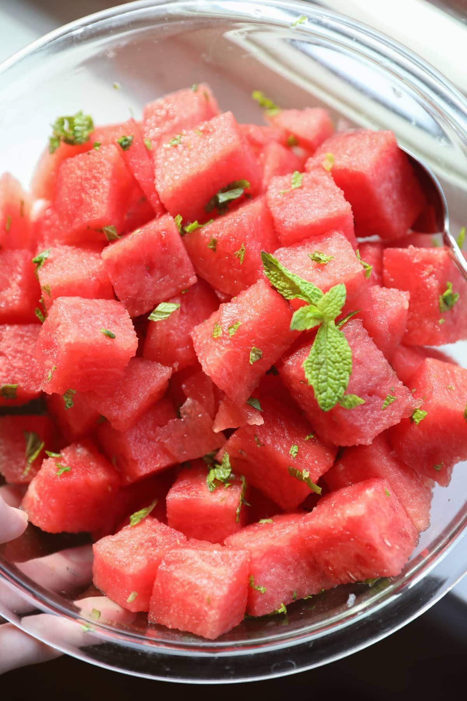

Watermelon salad

Description
This recipe is perfect for summer. The refrigerated ingredients will keep you cool in the summer sun.
Ingredients
- A quarter watermelon
- Cucumber
- Feta
- Mint
- A lemony dressing
- Cut the watermelon and cucumber into mouth sized chunks.
- Prepare the lemony dressing, using lemon and olive oil, some salt and pepper.
- Crumble some feta over the watermelon and cucumber.
- Wash some mint leaves and garnish the salad with them.